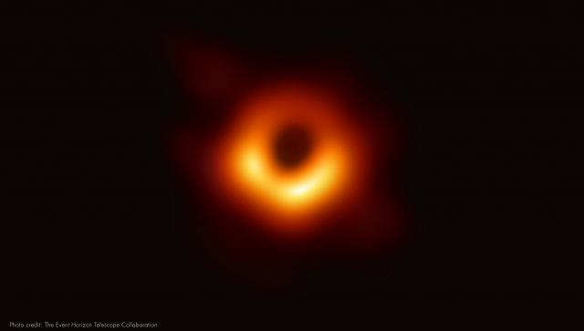
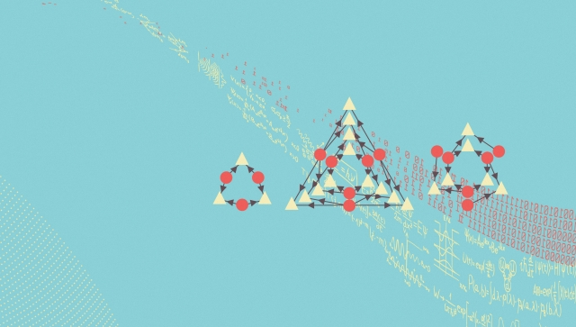

Study fields

Perimeter Institute is building a team of faculty members, postdoctoral researchers, and graduate students to conduct leading-edge analysis of astrophysical data collected by the Event Horizon Telescope (EHT).
The EHT is an international collaboration that coordinates observations from a global array of millimetre-wavelength radio telescopes that collectively provide unprecedented ability to resolve the event horizons of nearby supermassive black holes.
Perimeter Institute Quantum Intelligence Lab (PIQuIL) is a research centre and training hub for future leaders at the intersections of artificial intelligence (AI) and quantum systems. With partners in academia, industry, and government, PIQuIL leverages the world-class scientists and resources of Perimeter Institute to catalyze leading-edge, multidisciplinary research. The rapid advance in AI is attributed to decades of research in mathematics and computer science, with inspiration ranging from neuroscience to statistics and beyond. There is a strong relationship between foundational algorithms in machine learning and the fundamental physics of complex systems.
Quantum matter is one of the most promising and most productive areas in fundamental physics research. Located at the nexus of converging fields, including condensed matter physics, quantum information, quantum gravity, and string theory, it is a highly interdisciplinary area that encompasses many of Perimeter Institute’s research strengths.

The Perimeter Institute’s Quantum Causal Inference Lab establishes Canada as a world leader in this emerging, high-potential field. Quantum causal inference transforms machine learning, moving artificial intelligence beyond pattern-finding to revealing and predicting complex networks of cause and effect.
The quest to understand the fundamental building blocks of nature, and how they behave, has driven science for centuries. The understanding we have gained has enabled us to control matter at its most basic levels and develop technologies critical to our everyday lives.
We are just beginning to understand the quantum behaviour of elementary processes and the fundamental attributes of our universe. While numerical simulations have been pivotal in enhancing our understanding of subatomic physics, they are restricted in their predictive capabilities due to inherent limitations of classical computers to simulate quantum properties.
Fundamental physics has entered its most exciting period in decades. Advanced experiments are revealing new phenomena and profound surprises. We believe that answers to some of the deepest questions in science are now within reach.
The Centre for the Universe at Perimeter Institute aims to establish Canada as a world leader in the field of cosmology by providing a focal point for research. It promises to transform our understanding of black holes, the big bang, dark matter, and dark energy.